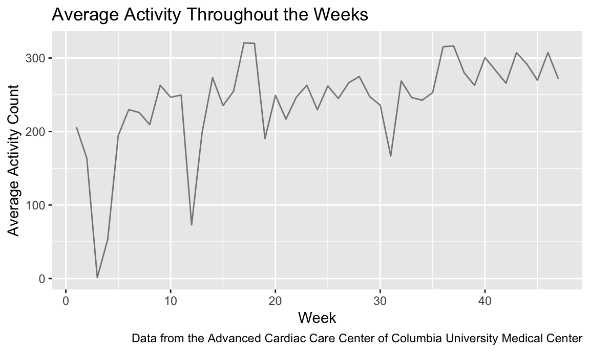
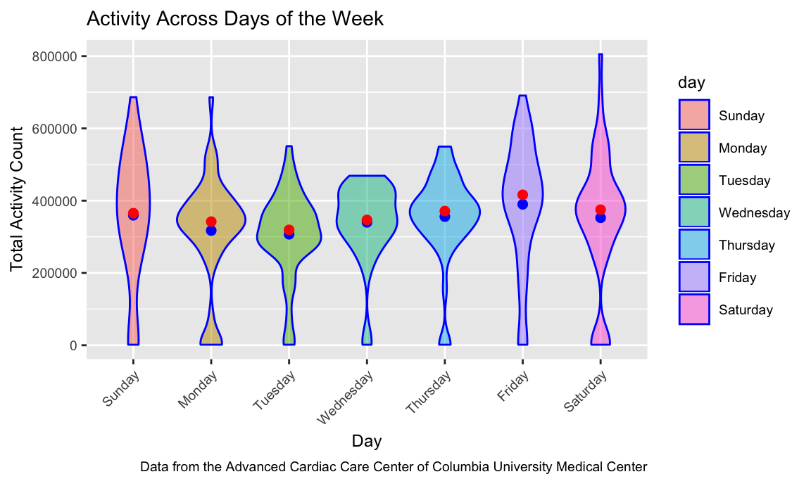
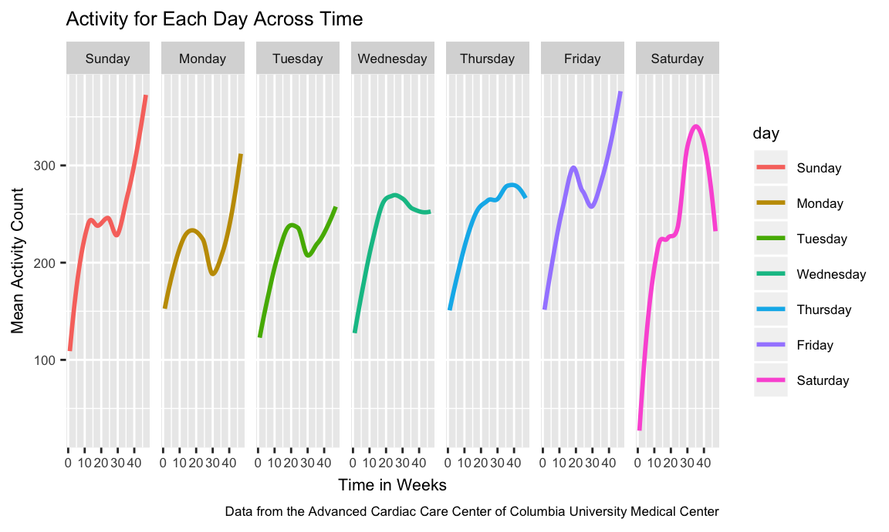
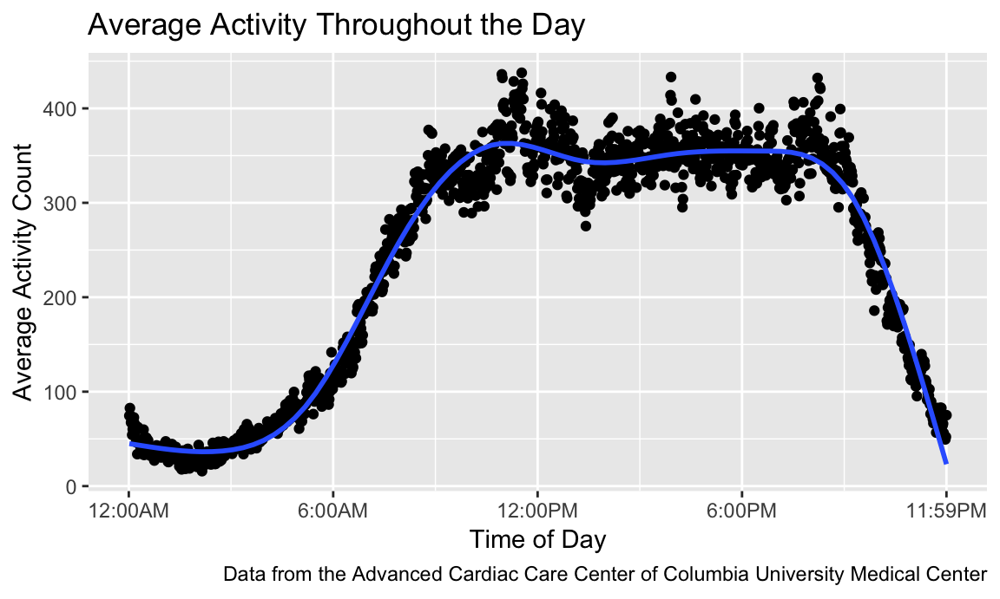
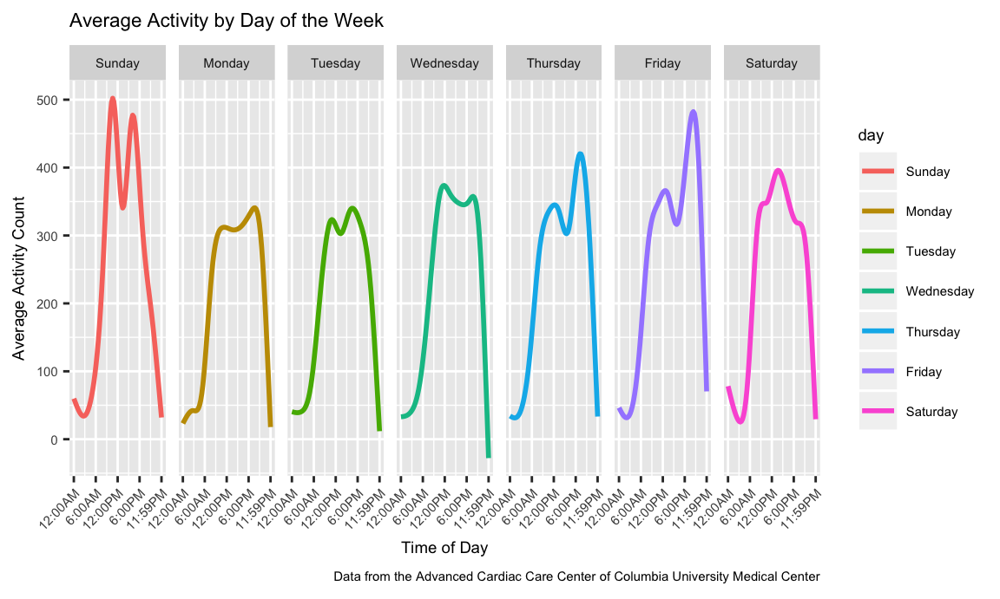

patient_data =
read_csv(file = "./data/midterm_data.csv") %>%
janitor::clean_names() %>%
gather(key = minute, value = activity_count, activity_1:activity_1440) %>%
separate(minute, into = c("remove_1", "minute"), sep = "_") %>%
select(-"remove_1") %>%
mutate(minute = as.numeric(minute),
day = as.factor(day),
activity_count = as.integer(activity_count)
)## Parsed with column specification:
## cols(
## .default = col_double(),
## week = col_integer(),
## day = col_character()
## )## See spec(...) for full column specifications.After loading and cleaning the datset, the following variables were included: activity_count, day, minute, week. There were 473760 observations over a total of 47 weeks. We have specific activity for each minute of each day of the week. The maximum activity count that was observed over a one-minute epoch was 10417 and the minimum activity count that was observed was 1. The most frequently observed activity count was 1 meaning many minutes throughout the day, this patient had minimal activity.
Below is a graph that determines if this participant became more active over time. We can see from the graph that although there are a couple of dips (i.e. at Week 3, at Week 12) there is a general upwards trend. In addition, after conducting a linear regression, we see that there is a positive linear relationship between week and average activity count (i.e. p-value - 0.0000142), meaning that as time goes, this patient increases in activity and therefore, his treatment is working and he is improving in health.
patient_data_week =
patient_data %>%
group_by(week) %>%
summarize(mean_activity_count = mean(activity_count))
week_plot =
patient_data_week %>%
ggplot(aes(x = week, y = mean_activity_count)) +
geom_line(alpha = .5) +
labs(
title = "Average Activity Throughout the Weeks",
x = "Week",
y = "Average Activity Count",
caption = "Data from the Advanced Cardiac Care Center of Columbia University Medical Center"
)
week_plot
stat_test =
patient_data_week %>%
lm(mean_activity_count ~ week, data = .) %>%
broom::tidy() %>%
knitr::kable(digits = 1)
stat_test| term | estimate | std.error | statistic | p.value |
|---|---|---|---|---|
| (Intercept) | 173.8 | 15.7 | 11.1 | 0 |
| week | 2.8 | 0.6 | 4.9 | 0 |
Below is a graph that looks at day of the week and total activity count. The red dots represent the median activity counts and blue dots represent the mean activity count for that day. For every day of the week, the mean is slightly below the median meaning the data is slightly skewed left. This is most likely because many activity counts were 0. It is evident that this patient was most active on Friday as the graph shows it had the greatest median and mean activity count.
day_data_isolation =
patient_data %>%
mutate(day = forcats::fct_relevel(day, c("Sunday", "Monday", "Tuesday", "Wednesday", "Thursday", "Friday", "Saturday"))) %>%
group_by(week, day) %>%
summarize(total_activity_count = sum(activity_count)) %>%
ggplot(aes(x = day, y = total_activity_count)) +
geom_violin(aes(fill = day), color = "blue", alpha = .5) +
theme(axis.text.x = element_text(angle = 45, hjust = 1), text = element_text(size = 9)) +
labs(
title = "Activity Across Days of the Week",
x = "Day",
y = "Total Activity Count",
caption = "Data from the Advanced Cardiac Care Center of Columbia University Medical Center"
) +
scale_y_continuous(breaks = c(0, 200000, 400000, 600000, 800000),
labels = c("0", "200000", "400000", "600000", "800000")) +
stat_summary(fun.y = mean, geom = "point", color = "blue", size = 2) +
stat_summary(fun.y = median, geom = "point", color = "red", size = 2)
day_data_isolation
The graph below examines the relationship between time and average activity by day of the week. Average activity for the first couple of weeks on Saturday are well below 100 which is drastically different from the other days of the week. Furthermore, although over time, mean activity generally increases for all days of the week, for Saturday, Monday, and Friday, there is a drastic increase in mean activity after week 30.
activity_data_over_time =
patient_data %>%
mutate(day = forcats::fct_relevel(day, c("Sunday", "Monday", "Tuesday", "Wednesday", "Thursday", "Friday", "Saturday"))) %>%
group_by(week, day) %>%
summarize(mean_activity = mean(activity_count)) %>%
ggplot(aes(x = week, y = mean_activity, color = day)) +
geom_smooth(se = FALSE) +
facet_grid(~day) +
theme(text = element_text(size = 8)) +
labs(
title = "Activity for Each Day Across Time",
x = "Time in Weeks",
y = "Mean Activity Count",
caption = "Data from the Advanced Cardiac Care Center of Columbia University Medical Center"
)
activity_data_over_time## `geom_smooth()` using method = 'loess' and formula 'y ~ x'
Below is the average activity count over 24 hours within a day. Using this graph, it is evident that this patient is most active around 9:00AM to 9:00PM each day. During this time, average activity count ranges from 300 to 400 and there is a sharp increase in activity count from 6:00AM to 9:00AM and a sharp decrease in activity count from 9:00PM to 11:59PM.
activity_over_day_plot =
patient_data %>%
group_by(minute) %>%
summarize(mean_activity = mean(activity_count)) %>%
ggplot(aes(x = minute, y = mean_activity)) +
geom_point() +
geom_smooth(se = FALSE) +
labs(
title = "Average Activity Throughout the Day",
x = "Time of Day",
y = "Average Activity Count",
caption = "Data from the Advanced Cardiac Care Center of Columbia University Medical Center"
) +
scale_x_continuous(breaks = c(0, 360, 720, 1080, 1440),
labels = c("12:00AM", "6:00AM", "12:00PM", "6:00PM", "11:59PM"))
activity_over_day_plot## `geom_smooth()` using method = 'gam' and formula 'y ~ s(x, bs = "cs")'
Below is a graph that shows average activity over 24 hours separated by day of the week. The graphs shows two peaks in which this patient had the highest average activity around 9:00AM to 12:00PM and 3:00PM to 6:00PM on Sundays. For other days such as Mondays, Tuesdays, and Wednesdays, this patient had an average activity level of 300 to 400 from 9:00AM to 9:00PM and on days such as Thursdays and Fridays, his peak average activity was around 6:00PM to 9:00PM.
activity_by_day_plot =
patient_data %>%
mutate(day = forcats::fct_relevel(day, c("Sunday", "Monday", "Tuesday", "Wednesday", "Thursday", "Friday", "Saturday"))) %>%
group_by(minute, day) %>%
summarize(mean_activity = mean(activity_count)) %>%
ggplot(aes(x = minute, y = mean_activity, color = day)) +
geom_smooth(se = FALSE) +
facet_grid(~day) +
theme(axis.text.x = element_text(angle = 45, hjust = 1), text = element_text(size = 7)) +
labs(
title = "Average Activity by Day of the Week",
x = "Time of Day",
y = "Average Activity Count",
caption = "Data from the Advanced Cardiac Care Center of Columbia University Medical Center"
) +
scale_x_continuous(breaks = c(0, 360, 720, 1080, 1440),
labels = c("12:00AM", "6:00AM", "12:00PM", "6:00PM", "11:59PM"))
activity_by_day_plot## `geom_smooth()` using method = 'gam' and formula 'y ~ s(x, bs = "cs")'